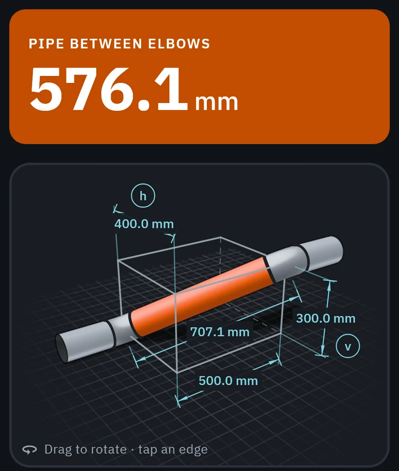
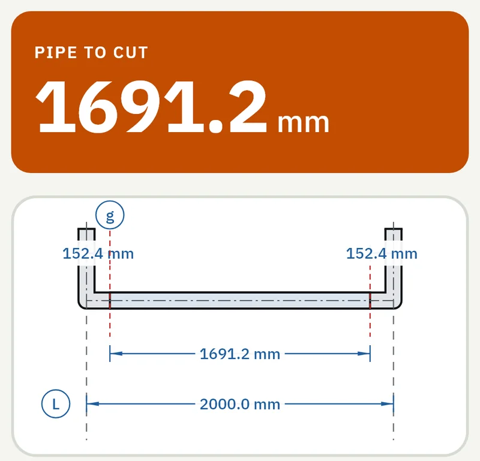

Pipework
The pipe to cut between two fittings, with the take-off of each one already deducted. Elbows cut to any angle, rolled elbows, S jogs, manifolds and branches on an elbow, and an estimate of the welding consumables.
- Cut length
- Cut an elbow
- Rolled elbow
- S jog
- Manifold
- Branch on elbow
- Welding



